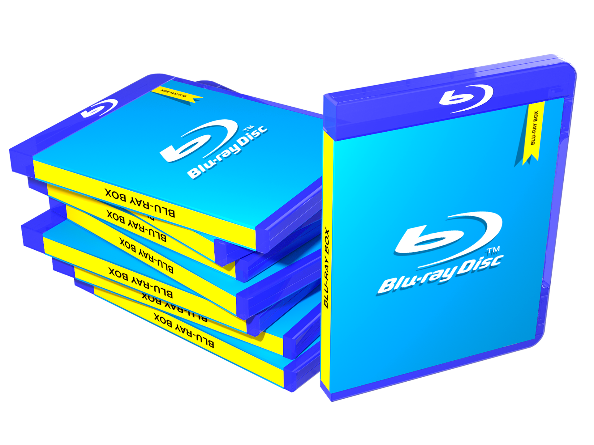

Blu-Ray™ Spot is the place to go for Blu-Ray™ disks and Blu-Ray™ related technologies With our service, you can buy, rent or even sell new or old Blu-Ray™ disks. You can also buy or rent Blu-Ray™ players and related accessories to store your collection. Sign up now with the offer code Cruella and get 50% off your first 5 purchases (not including rentals). You can also receive a free code to get the Blu-Ray™ version of Disney's™ Cruella (2021) FOR FREE when it comes out nationwide.
The Blu-Ray™ format is the future for owning hard copies of your favorite films. It is the media format, letting you watch your favorite movies in 720p or 1080p. Blu-Ray disks can also store more than a normal DVD.
Blu-Ray™ disks must be played on a device that can handle the format. Include but are not limited to: video game consoles, Blu-Ray™ disk players (Purchase your own here) Regular Blu-Rays™ work differently than regular DVDs and require a different player. Blu-Rays™ are also region locked in the same way that DVDs are region locked. The disk must be a part of the same region as the player.